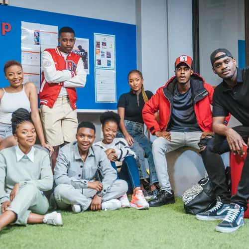
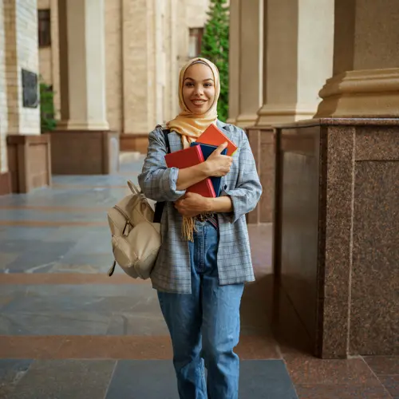

Student Life
We are dedicated to nurturing the potential of our students and giving them a
holistic student life experience that blends academic excellence, vibrant campus life,
wellness support, and valuable learning resources.
THE COOLEST COLLEGE
At IIE Rosebank College, we are dedicated to nurturing the potential of our students
and keeping them engaged through a vibrant campus life. Our diverse range of cultural
, sports, and social activities create a rich campus experience, helping our students
develop as well-rounded individuals. To further enhance your tertiary journey, join our
community initiatives like the clean-up campaign. Stay informed about upcoming events
by checking out the latest on-campus updates.
Sell Your Pre-Loved Textbooks
Turn your old textbooks into cash. IIE Rosebank College is buying back
textbooks at HALF the original price. Limited stock needed. Sell yours
today. Visit your information centre (Library).

STUDENT SUPPORT
At IIE Rosebank College, we prioritize the wellbeing of our students and provide a range of support services on campus. Our Student Wellness Managers/Coordinators are available to help you manage feelings of stress or anxiety, and our confidential counseling sessions are completely free of charge.
Our counseling sessions offer a range of benefits, including:
•Managing stress and anxiety
•Healing from past traumas
•Enhancing self-awareness
•Developing healthier relationships with oneself and others

International students
Studying as an international student can be an exciting and
challenging experience. It involves
leaving your home country and immersing yourself in a new culture, meeting new people,
and navigating a different education system.
As an international student, you will have the opportunity to gain
valuable knowledge and skills, broaden your perspective, and build your
personal and professional network. However, there may also be unique challenges
such as language barriers, cultural differences, and adapting to a new way of life.
Nonetheless, Rosebank is here to guide you by creating a rewarding experience
that can pave the way for future success